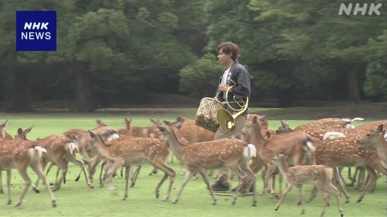

最新ニュース
1️⃣ 初めての「酷暑日」 熱中症に気をつけて
21日も、いろいろな所で、危険な暑さになりました。
岐阜県の郡上市八幡では、午後2時ごろ、40℃になりました。
気象庁は、今年から40℃以上になった日を「酷暑日」と呼ぶことにしています。初めての「酷暑日」になりました。
気温がいちばん高くなったのは、岐阜県の多治見市で、40.3℃でした。
22日も、「酷暑日」になる所がありそうです。
熱中症にならないようにエアコンを使ってください。のどが乾いていなくても、水を飲んでください。長い時間、外にいないようにしてください。
2️⃣ イギリスの新しい首相 労働党のバーナムさんになった
イギリスの政治のニュースです。
17日、イギリスの与党の労働党は、新しいトップを下院議員のバーナムさんに決めました。
バーナムさんは、56歳。有名なマンチェスター市の市長を9年間していました。
バーナムさんは、20日、新しい首相になりました。そして、「政治を、もっといいものに変えていきたい」と話しました。
バーナムさんは、最近の10年で7人目の首相です。
3️⃣ サッカーのワールドカップ スペインが優勝した
サッカー、ワールドカップは日本の時間で20日、1番を決める試合がありました。
スペインとアルゼンチンが試合をして、1ー0でスペインが勝ちました。スペインが1番になったのは2回目です。
アルゼンチンのメッシ選手は、点を取ることができませんでした。
MVPには、スペインのキャプテン、ロドリ選手が選ばれました。MVPはいちばんすばらしい選手のことです。
今回のワールドカップで、いちばん点を取ったのは、フランスのエムバペ選手でした。8つの試合で10点取りました。
前のワールドカップのときもエムバペ選手でした。
4️⃣ 奈良公園 鹿がホルンの音で集まった

奈良市にある奈良公園には鹿がたくさんいます。
19日から、ホルンという楽器の音で鹿を集める「鹿寄せ」が始まりました。
鹿寄せは毎年、春・夏・冬の何日か、決まった日にします。100年より前からやっているようです。
鹿の世話をしている人がホルンを吹くと、鹿が100頭くらい集まりました。子どもの鹿もいます。
鹿はどんぐりをたくさん食べました。
兵庫県から来た小学生は「楽器で鹿を集めることができることに驚きました。自分もしてみたいです」と話していました。
今年の「なつの鹿寄せ」は9月27日まで、毎週日曜日に行います。9月6日はやりません。
- 〜ところ
- 〜になる
- 〜ごろ
- 〜から
- 〜以上
- 〜ことにする
- 〜こと
- 〜ている / 〜でいる
- 〜ことにしている
- 〜がある / 〜がいる
- 〜そうだ
- 〜ように
- 〜ならない
- 〜てください / 〜でください
- 〜ても / 〜でも
- 〜なくて
- 〜ようにする
- 〜のに
- 〜ことができる
- 〜らしい
- 〜という
- 〜ようだ / 〜みたいだ
- 〜より
- 〜くらい / 〜ぐらい
- 〜てみる
- 〜まで
vebaev.github.io
Generated: 2026-07-21 11:47:26 UTC